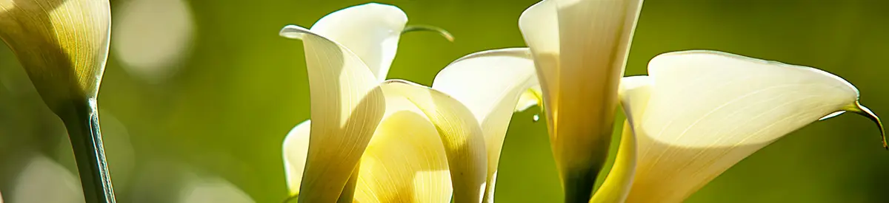
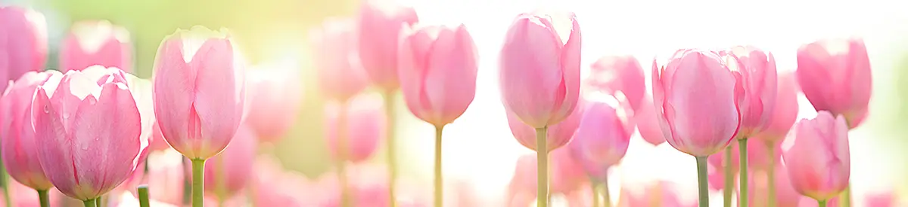
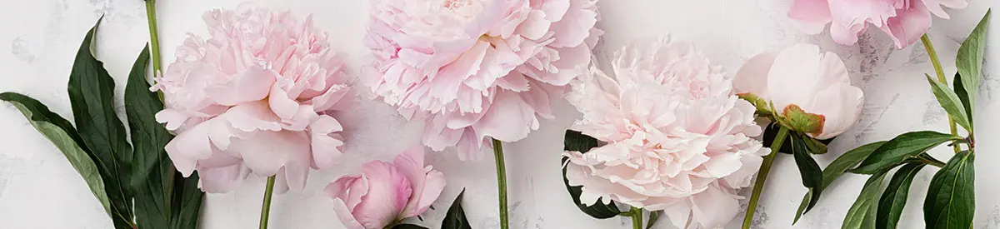
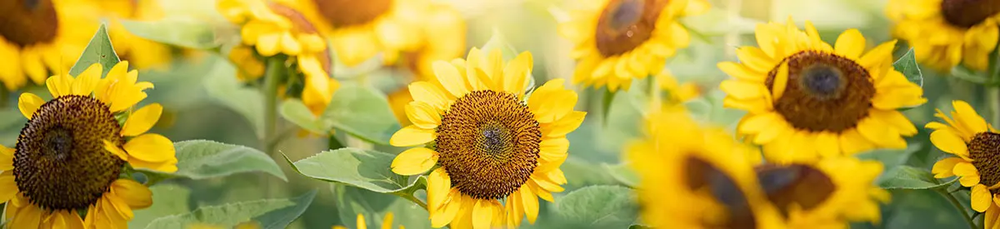
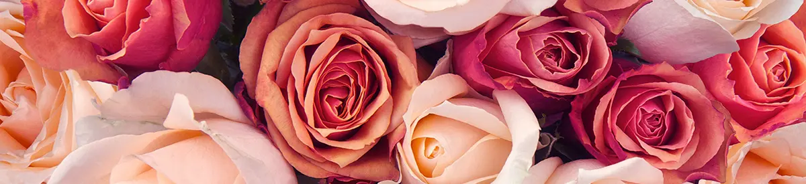

| The calla lily, sometimes also called the arum lily, is associated with faith and purity. For this reason, religious figures like the Virgin Mary are often depicted holding a bouquet of calla lilies. |  | There are over 150 species and 3,000 varieties of tulips, which are part of the lily family. Like most common flowers, tulips come in a wide variety of colors and shapes, each of which has its own meaning. As a signal of the arrival of spring, these blooms are often associated with Easter |
 |
Peonies, a beloved flower that blooms in late spring/early summer, come in a wide variety of colors. They range from white to red, coral, purple, pink, and yellow. These flowers make stunning centerpieces and work great in large bouquets |
 | Daisies are a very popular flower that can be found on every continent other than Antarctica. They belong to one of the largest known plant families and symbolized innocence, a connotation that comes from the Victorian era |
|
Sunflowers are one of the most popular flower types and are best known for their dazzling yellow color and large size. They generally symbolize adoration, loyalty, and longevity in the language of flowers. |
 | Like the flower itself, the history of the rose is very colorful. Roses have been naturally growing for over 35 million years! However, they were not known to be cultivated until about 5,000 years ago. |
 |